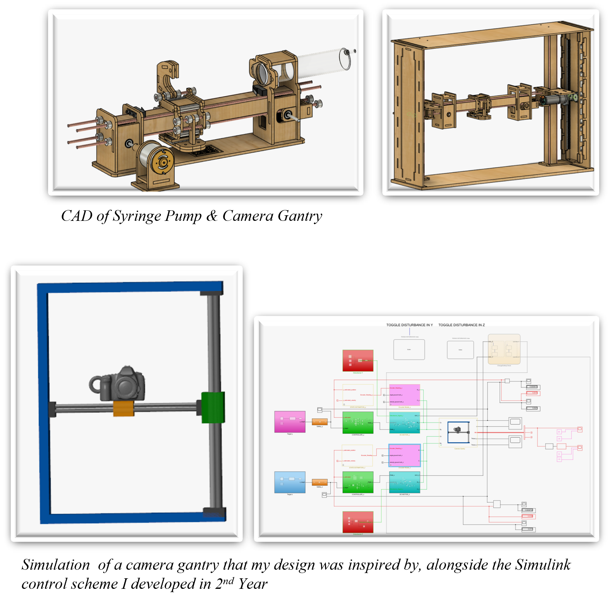
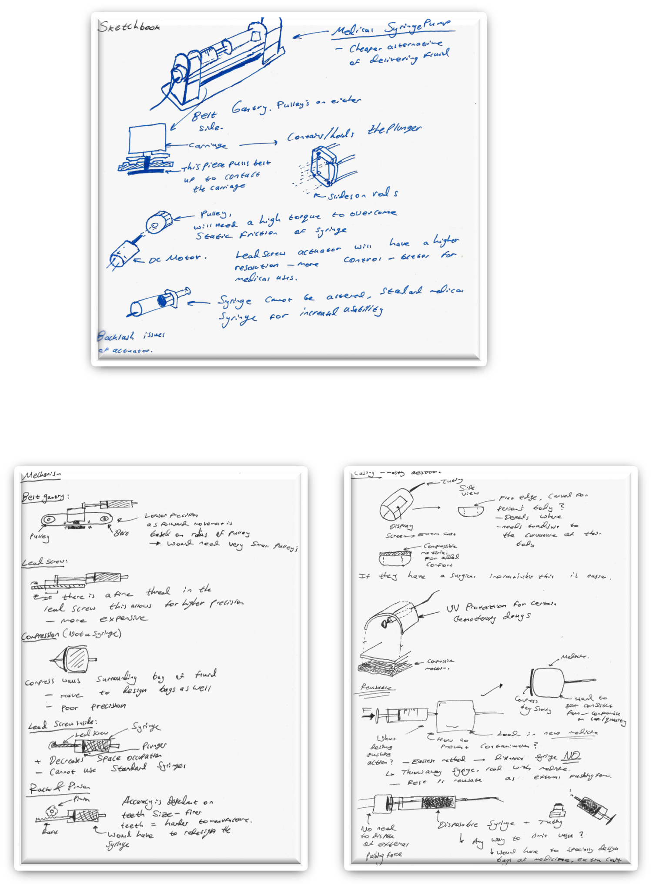
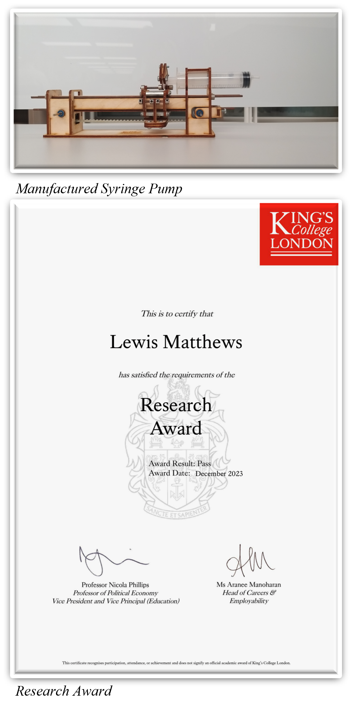
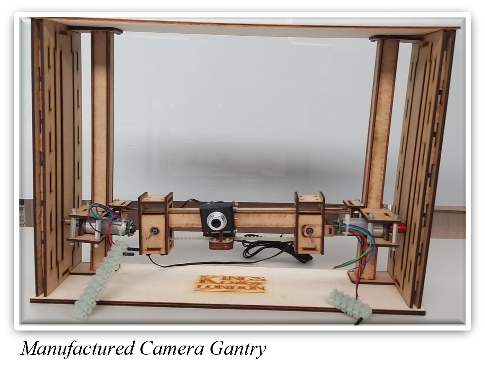

Syringe Pump &
Camera Gantry
KURF Overview

Project Type: Individual Research
Duration: 4 Weeks
Time: Summer 2023 (1st Year)
The purpose of the King’s Undergraduate Research Fellowship was to design and build a system that incorporates the principles behind mechatronics. This would then be presented to students to aid in their learning process for the Mechatronics 2nd Year Engineering module at King’s College London.
The project was very open-ended regarding what systems I could design and manufacture. I decided to design a modular syringe pump that is a cheaper alternative to current syringe pumps, and a camera gantry which is the physical model of a Simulink coursework that the students must complete. The idea of the physical system would be to help them with understanding what the simulation is trying to achieve, as there are many safety considerations to consider which are easier to understand when looking at a physical model.
Design Process

The Syringe Pump design consists of four steel rods and an inner cuboid core for improved strength and stability for the carriage to slide along the rods. A belt runs through the inside of the core and then just below it, 3D-printed teeth, which are pressure fit into the carriage interlock with the belt so that the carriage moves along with the belt. Pulleys are hidden inside the pillar support structures, as there is variability in the manufacturing process. A belt tensioner was also designed to ensure the belt is taut. The entire syringe pump was manufactured with laser cut plywood that would slot into each other - free of glue!
Next was to ensure that custom syringes didn’t have to be used in order to work with this pump, so I designed a latch to lock in the syringe pulley with the carriage, then locked the syringe tube into one of the support pillars, so when the pulley rotates the belts moves linearly, the carriage moves along with the belt therefore the plunger is pushed causing fluid to exit the syringe.
The same principle of a belt and carriage was applied to the camera gantry but for the Z-axis movement I designed two rack and pinion linear actuators that carriages would travel along.
End Result

Ultimately, I was able to successfully design and manufacture the Syringe Pump and Camera Gantry for the research project and was granted the research award.
Overall, this project helped to hone my skills as a designer and researcher, as I had to consider different mechanical systems and investigate their advantages over other systems and then how they would interact with electronics.
I would later go on to research the feasibility of the open-source modular syringe pump in the medical field whilst improving upon my design.
